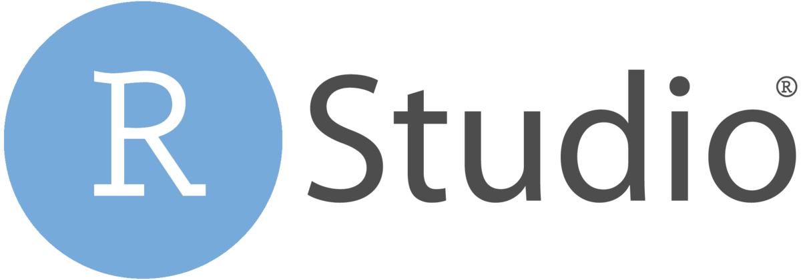
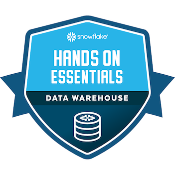
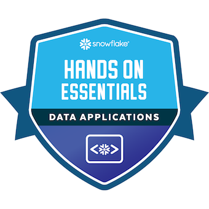
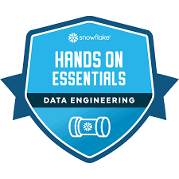
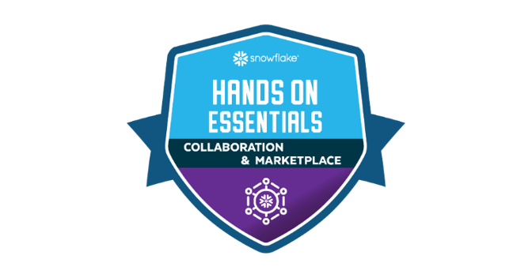
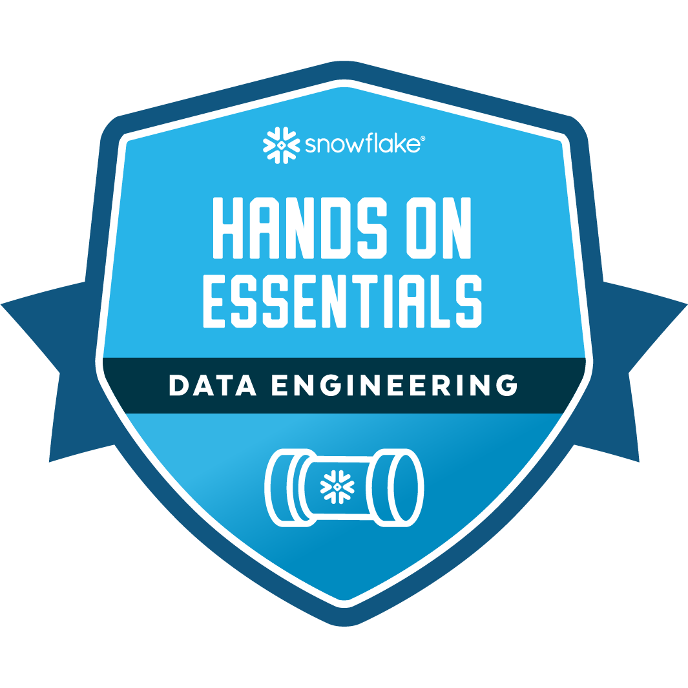

Here’s what I’ve done
I am Youssef Dir, a recent graduate in Business Data Science. Passionate about data analysis, machine learning, and web development. I have experience working with Python , SQL, RStudio, Snowflake,Power BI and I aim to apply my skills in real-world projects.
Avanci Mvgroup a consulting company specializing in marketing that helps its customers boost
their business with data-driven strategies and solutions.
The generation of realistic data using the Faker library (Python) allows for the
simulation of a dataset tailored for business analyses. This data can then be implemented
on SQL Server, where relationships betweentables are managed and the structure is optimized for
efficient access. Once the data is imported, a cleaning process is carried out to handle missing
values, detectinconsistencies, and prepare the data for in-depth exploratoryanalysis. This ensures
data integrity and facilitates its use in analytical and decision-making contexts.
The integration of visualization tools such as Plotly and Matplotliballows for
the effective presentation of insights, including customer segmentation and business
performance. Advanced visualizationsare created, such as interactive maps to analyze
regional audiences, charts for customer segmentation, and performance tracking graphs.
Additionally, a dedicated tab is implemented for data quality visualization,providing
a comprehensive view of dataintegrity and ensuring that any issues can be addressed
promptly for accurate decision-making.
statistical analysis and data cleaning, addressing missing values and detecting anomalies to
ensure high-quality data. I identified key features by evaluating their relative importance in
predictions and used PCA to detect redundancy between variables, optimizing feature selection.
To handle imbalanced classes, I implemented a sampling strategy to balance the dataset. I then
trained Random Forest and XGBoost models to predict customer
behaviors and characteristics,evaluating their performance using metrics like accuracy and AUC ROC.
Development of a VBA script to automate the reading of PDF files, extract key information and
organize it into structured tables.
Development of a VBA-based tool to track SCPI (Civil Real Estate Investment Company)
values, including purchase values, Realization values,subscription prices,etc.

Streamlit Proficiency: Development and deployment of data-driven interactive applications.
Data Manipulation: Skilled in Pandas and NumPy for data processing, and Parquet with SQLAlchemy for SQL database implementation.
Data Visualization: Crafting advanced visualizations with Plotly and Seaborn.
Dependency Management: Leveraging Poetry for dependency isolation and management, alongside containerization for application portability.
Web Scraping: Extracting web data using BeautifulSoup.
Predictive Analysis: Applying SciPy and Seaborn for modeling and prediction.

Data Manipulation: Proficiency in Tidyverse packages such as {dplyr}, {purrr}, and {stringr} for efficient data handling.
Data Visualization: Crafting advanced visualizations using {ggplot2} and {plotly}.
Web Development: Building modern, production-ready web applications with {shiny}.
Machine Learning: Predictive modeling with {tidymodels}.
Exploratory and Factor Analysis: Conducting PCA (Principal Component Analysis), CA (Correspondence Analysis),
MCA (Multiple Correspondence Analysis), and MFDA (Multiple Factor Analysis of Mixed Data).
Productivity Tools: Leveraging {lintr}, {styler}, and {usethis} for code formatting, linting, and task automation.
Sentiment Analysis: Implementing sentiment analysis with dedicated packages (e.g., {tidytext}).

Table Creation: Proficiency in designing and creating SQL tables to structure data.
Joins: Expertise in using joins (INNER, LEFT, RIGHT, FULL) to combine and analyze relational data.
    
Data Warehousing Workshop: Proficiency in databases, warehouses, SQL worksheets, and external stages for
data management and analysis.
Data Engineering Workshop: Proficiency in timezones, timestamp formats, CTAS, streams/CDC, tasks, JSON parsing,
merge statements, window functions, dashboards, Snowpipe, and metadata management.
Data Application Builders Workshop: Streamlit in Snowflake to build interactive data
applications, leveraging Python and pandas for data manipulation, and understands the basics of variables
APIs, API keys, CLIs, and the SnowSQL CLI for efficient development and database operations.
Collaboration, Marketplace & Cost Estimation Workshopstrong: strong foundation in SQL Basics, Intermediate SQL and
Block Scripting/Control-of-Flow, with expertise in Snowflake-specific features like COPY INTO, file formats, cost categories,
deployments on Azure and GCP, and leveraging the Snowflake Data Marketplace for data sharing.
Data Lake Workshop: Proficiency in handling timezones and timestamp formats, CTAS statements,Snowflake
Streams/CDC, Tasks, and Snowpipe for continuous loading, alongside advanced SQL skills like parsing JSON with paths
and casts, SQL Merge statements,window functions, and storing metadata in columns.
Git - Gitlab: A strong mastery of Git, with skills in version control, branching, merging, committing changes,
resolving conflicts, and collaborating on repositories
Quarto: creating websites, documenting packages, and presentations with dynamic reveal.js slideshows.
Excel: proficient in mastering dynamic pivot tables and charts, managing dynamic lists and named ranges,
and automating graphics and tasks using VBA.
PowerBi: dashboards and KPIs to visualize and track key performance indicators effectively.
Big Data,Data Mining, Maching learning ,Web scraping
Exploratory Data Analysis ( Python , Rstudio ),PCA, MCA, MFDA, Microeconometrics , APIS , Pricing. SQL Data Management.
Econometrics, Statistics , Probability , R , Python ,
Microeconomics , Excel (VBA ) ,HTML - CSS , Macroeconomics , Mathematiques.